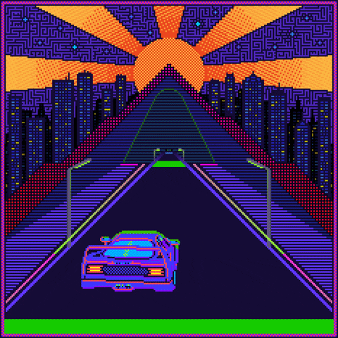

Hello!
My name is Anika Farhad ( Farisa ).
I am a computer science student at Memorial University of Newfoundland

I like to listen to music and make art works in my spare time.
I also like cooking, eating, shopping, and binge watching tv shows.
I like to build things where I can incorporate my artistic ideas while also making the experience of using it a fun time.
Such as games  or web sites!
Currently I'm learning pygame  and web development.
and web development.
I am also very interested in IT related subjects and the inner working of computers!